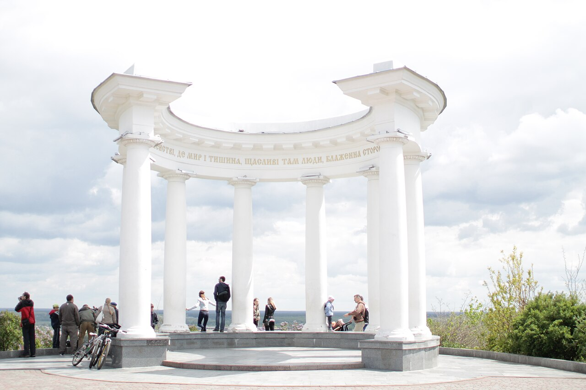
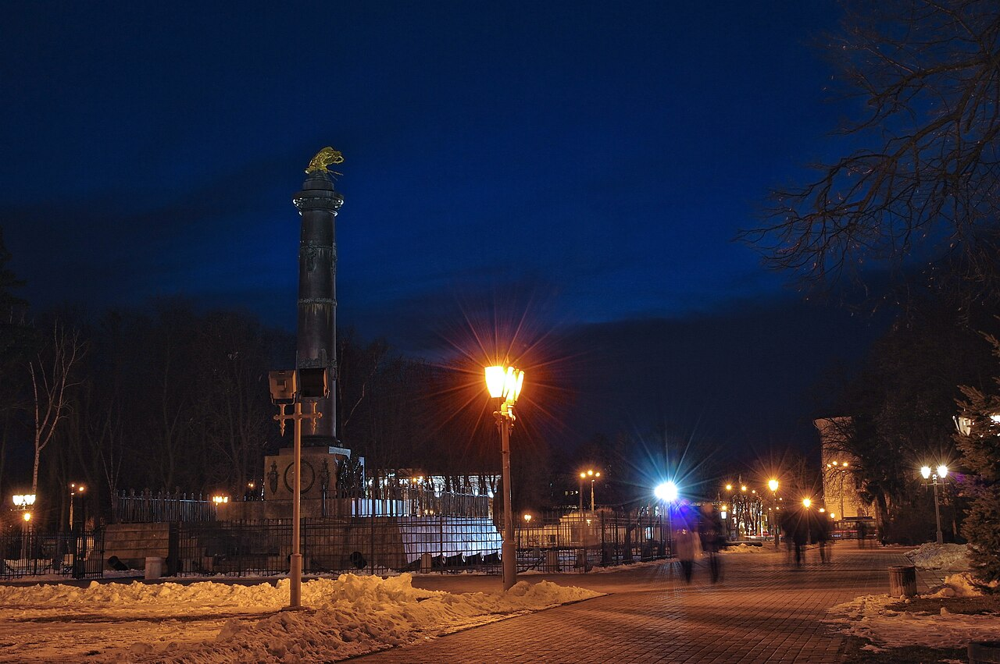
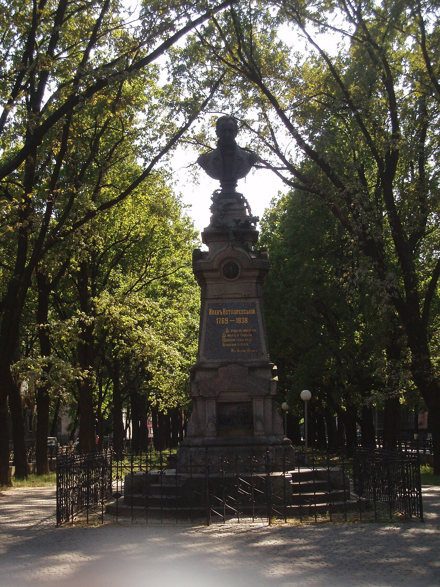

Моя Батьківщина | Карта посилань | Навігаційна карта | Мої одногрупники
Полтава — затишне місто з красивими парками та пам’ятками. Наведіть курсор на фотографію, щоб побачити коротку підказку.

З Білої альтанки видно місто та долину річки Ворскли.

Корпусний сад і Кругла площа є відомими місцями в центрі міста.

У Полтаві також є музей-садиба Івана Котляревського.
Студент групи 304-ТН Самойленко О. І.